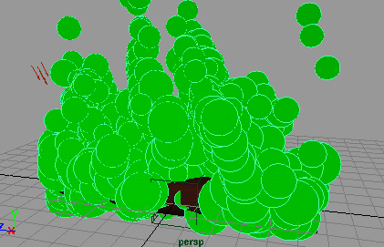
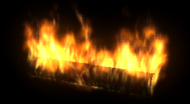

可以使用“火”(Fire)效果从以下对象发射火：
- nParticle 对象
- NURBS 或多边形曲面
- NURBS 曲线
- CV 数量、顶点、对象的编辑点
- 晶格点
准备使用火效果
使用火效果之前，应该了解下列问题：
- 一次只能对一个对象使用火效果。
若要对一组 NURBS 曲面应用火，请首先将每个曲面转化为多边形并结合曲面。从“曲面”(Surfaces)菜单集中选择修改 > 转化 > NURBS 到多边形(Modify > Convert > NURBS to Polygons)，然后从“多边形”(Polygons)菜单集中选择网格 > 结合(Mesh > Combine)。
若要对一组多边形曲面应用火，请直接使用网格 > 结合(Mesh > Combine)结合曲面。
- 如果从 NURBS 或多边形对象发射，则对象的大小和形状会影响火的质量。需要使用的对象应该足够大，以便能够生成足够的火焰区域。如果从曲线发射火，应避免使用突然改变方向的曲线。
- 对同一几何体多次使用火效果通常很有用。通过在每次使用时设定不同的选项，可以创建单次使用无法实现的复杂外观。
- 如果要对火在工作区中的四处移动设置动画，请考虑对粒子对象使用火效果。可以对粒子对象使用基于粒子的表达式，以便可以更灵活地改变火的运动。
- 您通常需要从对象的一部分发射火焰，而不是从整个几何体。在某些情况下，您需要火的对象部分不存在几何体。在这些情况下，一种常见方法是从该区域中的不可见几何对象发射。
使用火效果
- 执行下列操作之一：
- 选择要发射火的对象或 CV、编辑点、顶点或粒子。
- 若要创建位置发射器，请取消选择所有对象。
- 选择 >
 。
。 - 在“创建火效果选项”(Create Fire Effect Options)窗口中设置属性。然后单击“创建”(Create)。
火效果会创建发射器、发射的粒子对象、表达式、渐变、纹理和多个场。
- 播放动画。
发射的粒子在工作区中显示为圆形，因为粒子显示为“云”(Cloud)渲染类型。
下面是启用“着色 > 对所有项目进行平滑着色处理”(Shading > Smooth Shade All)时的示例。
 - 向场景中添加光并进行软件渲染以查看火。
例如，从“渲染”(Rendering)菜单集中，选择。

编辑火效果的属性
火效果在它创建的发射粒子对象中创建多个自定义属性。自定义属性控制场或发射器属性的组合，以减少调整火时需要本来执行的设置。
“创建火效果选项”(Create Fire Effect Options)窗口中的属性
选择 >  时，这些属性显示在“创建火效果选项”(Create Fire Effect Options)窗口中。对选项窗口所做的更改仅影响进行更改后创建的火。
时，这些属性显示在“创建火效果选项”(Create Fire Effect Options)窗口中。对选项窗口所做的更改仅影响进行更改后创建的火。
请参见火选项。
使用火效果后，可以通过选择发射的粒子对象并打开“属性编辑器”(Attribute Editor)的“附加属性”(Extra Attributes)区域来编辑大多数这些属性。例外情况在文本中有相关说明。
调整火的外观
- 调整由表达式、渐变和纹理控制的任何其他属性以调整效果。若要了解哪些表达式、渐变和纹理由火效果创建，请对另外一个空场景中的对象应用火。使用“属性编辑器”(Attribute Editor)、“表达式编辑器”(Expression Editor)和“Hypershade”查看增加的内容。
- 编辑“云”(Cloud)粒子渲染类型的属性。
- 通过使用动力学关系编辑器断开连接来禁用“湍流”(turbulence)场。
- 对发射器设置动画以在场景中移动火。